EZ-Map Guide
Connecting to EZ-Map
To start using the EZ-Map application, you should first connect to the robot. See Connecting to the Robot for details. Write down the robot’s IP that you will use when connecting to the robot.
Note
The primary devices for using this application are smartphones and tablets. The reason for this is since they are easier to follow the robot with. However, almost all devices that can run a browser should work.
The EZ-Map interface is available on the following webpage:
http://<ROBOT-IP>:3000
Note
This ROBOT-IP is the same IP that you used to connect to the robot.
If you followed the Connecting to the Robot properly then you should have this IP.
Warning
If you are connected to the robot using the robot’s Wi-Fi, you will not have internet access. Therefore, if you are using a device with enabled moile data transfer, disable it before connecting, since the mobile device won’t route packets through the robot by default. To use both the robot and the internet, switch to local network connection option.
See Connecting to the Robot for details.
Optional: Add to Home Screen
Note
The application can be used straight away. However, saving it as home screen application (see the image bellow) eliminates certain usage issues, so it is recommneded.
On certain occasions the required manifest file is not sent (3) which when saved will not launch the full screen setup properly. Please repeat the addition (and cancel unless the icon is shown) until it appears properly.
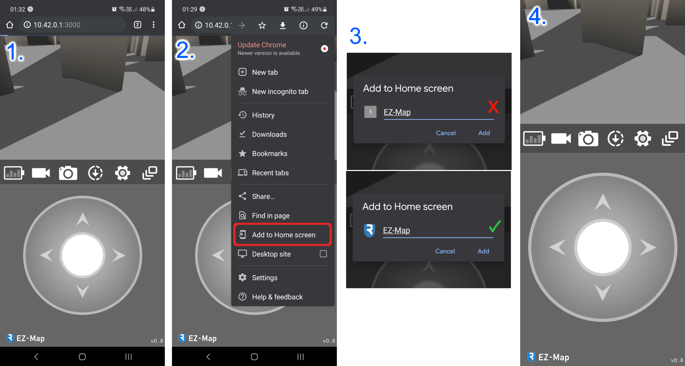{kind=link}
Initial setup
Important
This setup must be performed at least once on everey robot the first time you use the LiDAR. After configuration, the LiDAR will retain these settings on each boot. On a fresh image, however, the setup must be repeated to ensure proper operation.
When the robot first starts, you’ll be asked to provide a location and orientation for your sensors. The process can also be skipped by opening and closing the menu once and can later be accessed in the calibration menu (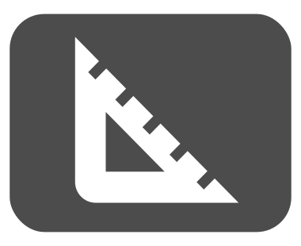).
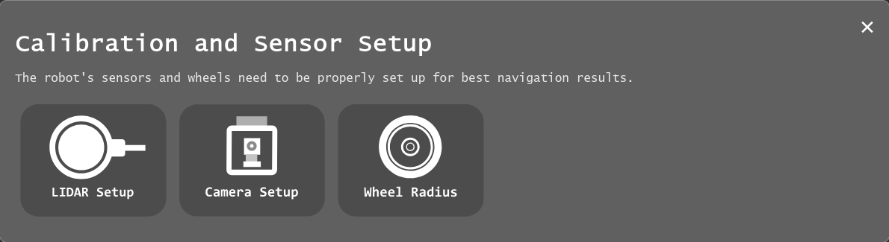{kind=link}
{kind=link}
Important
This step is absolutely essential to make sure your robot is configured properly.
{kind=link}
{kind=link}
{kind=link}
{kind=link}
{kind=link}
{kind=link}
{kind=link}
Remote control
Assuming the camera is connected correctly, one of the main two screens () should show the video stream from the robot.
The robot can be driven around using the joysticks which show up by default, see Driving the robot through EZ-Map for details.
IMAGE INCOMING

Note
If the battery widget appears as gray (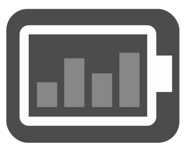), then the MCB and motor node have not yet connected. You may need to wait few more seconds until the robot is ready to go. If it persists for longer than a minute or two, then it may be an indicator that there’s something wrong with the motor control.
{kind=link}
Mapping
To start mapping the robot’s surroundings, first switch to the navigation view (). The interface shown should look like this:
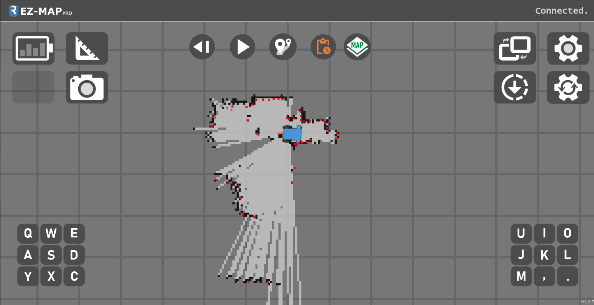{kind=link}
Note
If the screen displays a checklist instead of the map, wait a minute for the system to initialize or gently move the robot so the LiDAR can collect enough data for the first map build. If the checklist remains, the system likely isn’t receiveing the required input. For example: the motor node may not be running (no battery data) or the LiDAR may be disconnected or misconfigured. The checklist will indicate what’s missing.
{kind=link}
Map Management
Clicking the map management icon () opens a dropdown menu. From here, you can view saved maps, load a selected map, or create and save a new one. Resetting the map clears the currently displayed map (without deleting saved maps) and sets the starting point (0,0) to the robot’s current location.
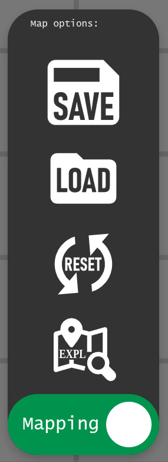{kind=link}
{kind=link}
The robot’s mapping software can operate in two modes:
In SLAM (Simultaneous Localization and Mapping) mode, or simply mapping mode, the robot operates in an unknown or partially known environment. It builds or extends a map of its surroundings while tracking its position within that evolving map.
In Localization Mode, the robot relies on a pre-loaded, fixed map. It determines its position by matching observed features to those on the static map.
INCOMING EXPLORATION MODE EXPLANATION
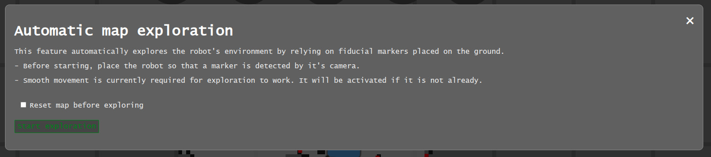{kind=link}
Warning
Maps are not automatically saved. If you want to save changes, make sure you save the map again.
Note
It is possible to switch from SLAM (mapping) mode to a localization-only mode at any time by clicking the bottom slider. When a saved map is loaded, it will automatically go into localization mode, so the map is preserved as-is. However, you can switch back to mapping to extend existing maps.
Landmarks
The hybrid particle filter SLAM also supports landmarks to improve localization accuracy. These landmarks are implemented as ArUco markers, which can be printed and placed within the camera’s view. Once detected with sufficient accuracy, they are added to the map and displayed as shown below.
{kind=link}
Localizing on a loaded map
On loading a new map, the robot may not be in the same place as when it was when the map was created. As such, it may be shown out of position:
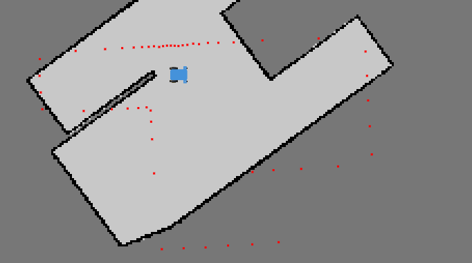{kind=link}
To give the system a good starting reference, drag and drop the robot so the red dots align with the black walls. After placement, an arrow appears indicating the forward direction.
On mobile, rotate the robot with an extra tap-and-drag.
On Desktop, move the robot mouse and click once to set the orientation.
{kind=link}
When the red dots are roughly aligned with the walls, release the robot and the system will attempt to localize it. As soon as the robot moves, it should snap to the map and confirm its position.
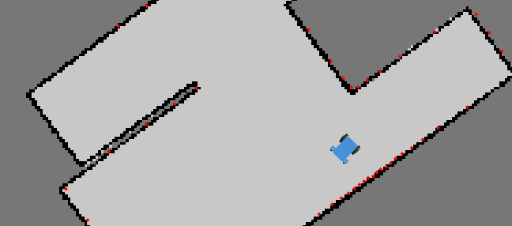{kind=link}
VIDEO CONTENT INCOMING
Routes
Clicking the route management icon (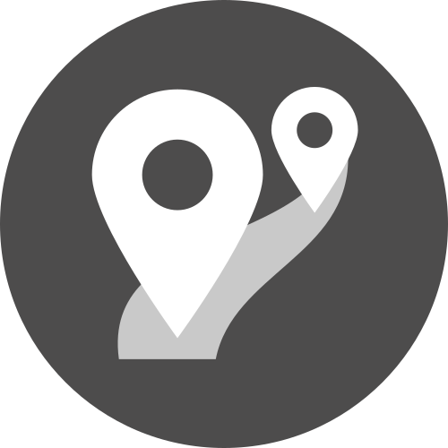) opens the route menu, where you can select, add, or delete routes.
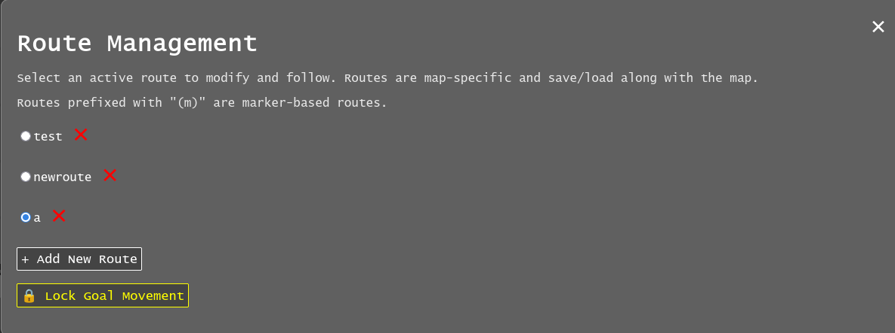{kind=link}
{kind=link}
Note
Routes are automatically saved along with a map. If the map isn’t saved, the route changes will be discarded on shutdown. If you are using an existing map, the routes will auto-save to the map location.
Creating a route
Double-tap anywhere on the map to add a new goal or, if no routes exist, to create the first one. Routes not currently selected on the same map are shown greyed out.
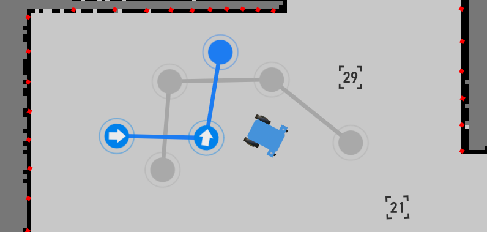{kind=link}
After creating and selecting a route, you can double-click/tap on the map to add or remove goals. Double-tapping on a line between goals inserts a new one, and goals can be dragged to adjust their positons.
VIDEO CONTENT INCOMING
Robot Movement
Once the route is set, press forward () or backward () button to move the robot along the route, opposite to the drawn arrows in the UI. The robot will first go to the nearest goal, then follow the route to the last point, stopping unless the route is a loop, in which case it continues until manually stopped.
{kind=link}
{kind=link}
While the robot is moving, the forward/backward button changes to a stop icon (). Pressing it stops the robot and cancels the route.
{kind=link}
VIDEO CONTENT INCOMING
Goal Actions
When a route is set up, define actions for each goal by holding down the mouse or finger on the goal until the Actions menu appears.
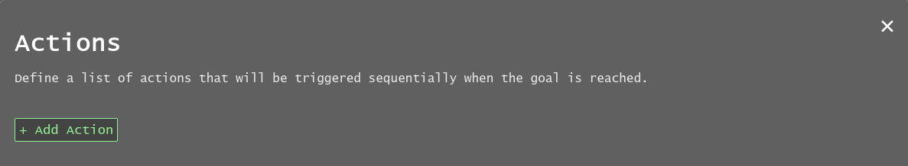{kind=link}
When the robot reaches a goal, it will sequentially execute the actions defined for that goal.
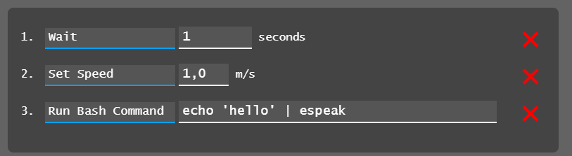{kind=link}
In the example above, the robot would:
Wait for one second
Set its movement speed to maximum
Execute a speech-to-text command (requires a speaker)
VIDEO CONTENT INCOMING
The goal’s node will change color and shape to indicate that actions have been assigned to it.
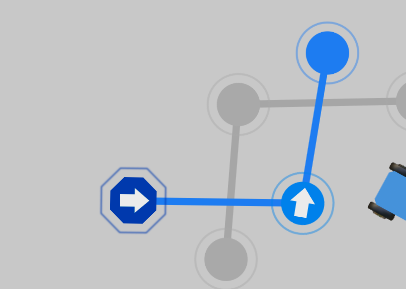{kind=link}
Note
The command line feature lets you run custom scripts at specific points along the route or send data to other system components.
Looping
There are currently two ways to enable perpetual driving:
Move the first and last goal together (requires at least three goals). The route will turn purple to indicate a successful loop.
{kind=link}
Note
When the first and last goals are joined, only the first goal’s actions will be executed, since the last goal is never processed.
Create a “ping-pong” loop by setting the first and last goals to trigger the route in opposite directions using actions.
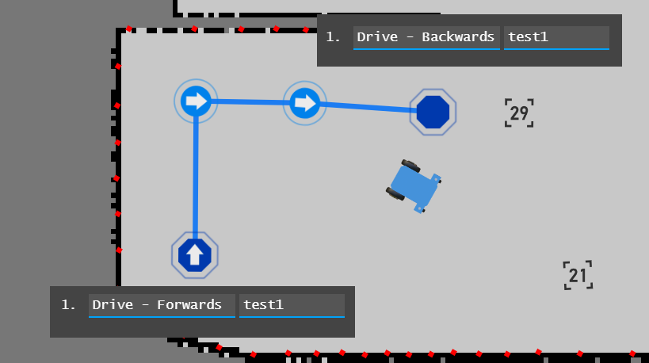The robot will drive the route forward, then reverse back to the start, and continue forward again. Removing the “Forward” action creates a simple go-and-return behavior. Additional combinations are possible by linking drive commands to other routes, allowing multiple routes to be chained together.
{kind=link}
VIDEO CONTENT INCOMING
Locking
On small devices, it can be helpful to lock goal positions to prevent accidental movement while setting up actions. The route management menu includes a [🔒 Lock Goal Movement] option, which locks route editing globally until it is turned off.
Initialization Triggers
The global triggers menu (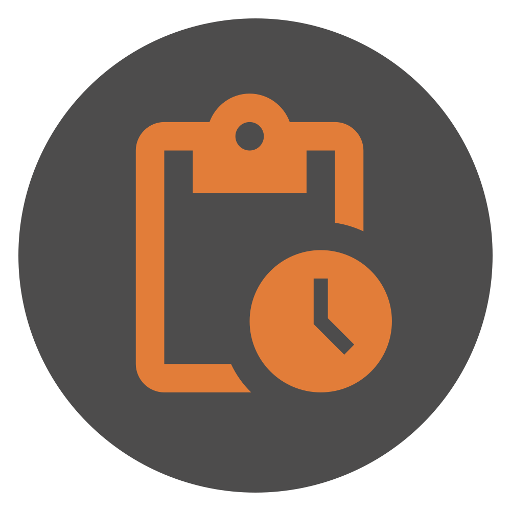) allows you to define a sequence of actions that execute when specified conditions are met. These actions are similar to those assigned to individual goals but are triggered by events rather than the robot reaching a goal. The functionality can be enabled or disabled to conveniently conigure and reset trigger cooldowns.
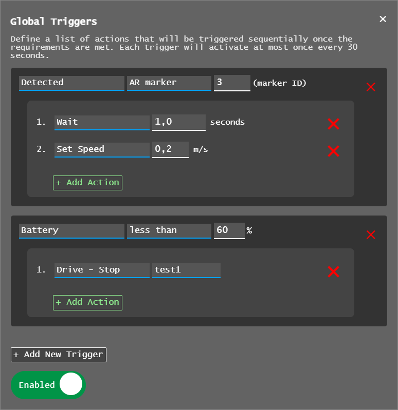{kind=link}
{kind=link}
In this example, the executed actions are:
When the robot detects ArUco marker number 3, it waits 1 second and then slows its movement.
If the battery drops bellow 60%, the robot stops route driving.
Note
Triggers and actions run independently of the web application, so they continue in the background even if the browser is closed.
Another example: upon detecting marker 23, the robot loads a saved map and starts a predefined route at maximum speed.
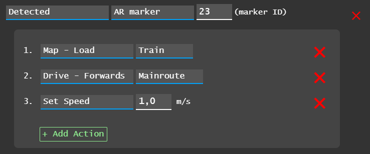{kind=link}
This trigger setup allows you to manually drive the robot into a room so it sees the marker, at which point it takes over and runs the automated route.
Note
Currently, the robot does NOT perform global initial localization, so it should be positioned and oriented near the map’s starting point/origin for best results.
INCOMING GLOBAL TRIGGER VIDEO CONTENT
Next Steps
To contribute to EZ-Map or customize it for your own configurations, continue to the advanced guide: